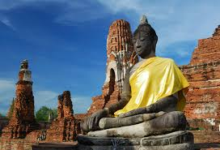
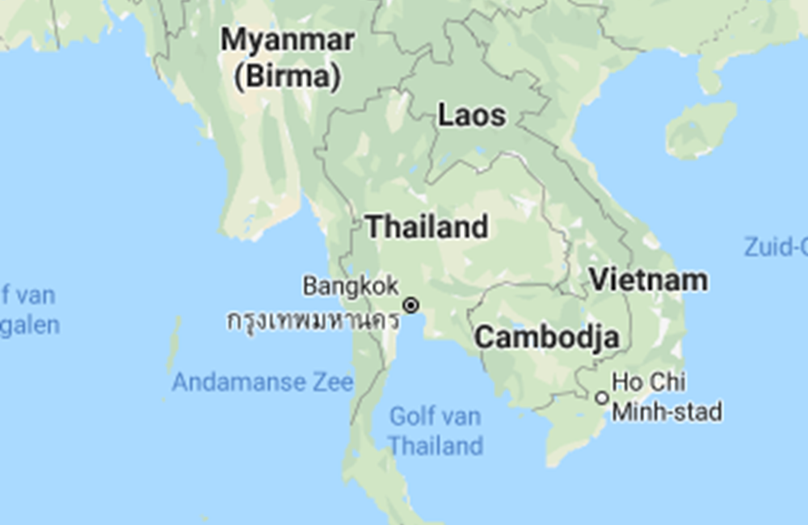
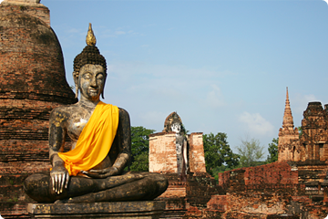

Thailand wordt al lange tijd bewoond door ontwikkelde culturen. Al rond 3600 voor Christus, tijdens het Bronzen Tijdperk, leefden er volken in wat we nu Thailand noemen. Vanaf 800 voor Christus tot 1200 na Christus kwamen er steeds meer volkeren bij, zoals de Mons uit Birma. Thailand kreeg steeds meer Indische invloeden door het eeuwenlange contact met kooplieden uit India. Het Boeddhisme dat kenmerkend is voor Thailand komt oorspronkelijk van de Mons. De Khmers uit Cambodja, die zich ook in Thailand vestigden, zorgden voor invloed op het bestuur, de krijgskunde en de algemene cultuur van het land.
Het huidige Thailand begint bij koning Ramkhamhaeng. Aan het begin van de veertiende eeuw voerde hij het Thaise alfabet in en zorgde hij dat er een administratie werd ingevoerd. Ook de religie van Thailand, het Theravada-boeddhisme, werd door hem als nationale religie ingevoerd. Na veel hoofdstadwisselingen en nog veel meer machtswisselingen werd Bangkok uiteindelijk de hoofdstad. De huidige naam Thailand werd pas in 1939 aangenomen, nadat het land een constitutionele monarchie was geworden.
Deze koninkrijken werden constant bedreigd door Birma en Vietnam, maar ook door rivaliserende Thaise en Laotiaanse staten. Europese koloniale mogendheden vormden een bedreiging in de 19e eeuw en het begin van de 20e eeuw, maar Thailand wist als enige land in Zuidoost-Azië kolonisatie te voorkomen. Na het einde van de absolute monarchie in 1932 werd Thailand zestig jaar lang vrijwel voortdurend bestuurd door een militaire dictatuur totdat een parlementaire democratie werd gevestigd.
